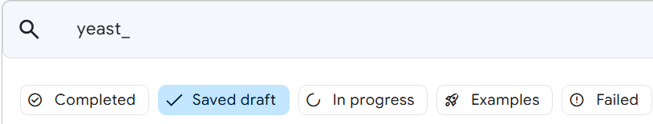
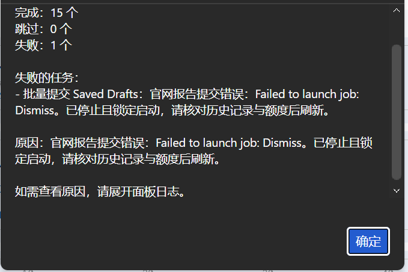

AF3 自动助手 v4.0.7 · 已有实测材料整理
FASTA 草稿分批教程
用 50 个真实蛋白测试任务，演示本地生成、草稿导入和真实预测。刷新或重开页面后，用原批次文件夹继续，不重新生成或重复上传。
示例文件：example_50_proteins.fasta。单链 17 个、双链 17 个、三链 16 个，共 99 条不同序列。序列来自 UniProt 已审阅的酿酒酵母蛋白条目，标题按链顺序保留登录号。多链组合只用于测试，不代表已知天然复合物。
实测进度：已暂停。本地生成 50 个任务，分成 30 + 20 两批。第一批 30 个草稿已确认导入，其中 15 个真实预测已成功完成（单链、双链、三链各 5 个），另 15 个仍为草稿。第二批 20 个未上传。下文为暂停前最后核实的记录，不是 50 个全部完成的结果。
已有截图来自同一份 50 任务文件的 Edge 无痕窗口实测，已裁剪脱敏。ego lite 已装好脚本，但缺少的恢复、换账号及后续预测截图暂不补拍。首次使用建议先用一条记录试跑。
从头开始
-
选示例文件，生成本地批次
登录官网，确认面板显示的是要使用的账号。若没有面板，先安装 Tampermonkey 和 AF3 脚本，按浏览器提示开启用户脚本运行权限；无痕窗口还需允许扩展在无痕模式运行。
选择
example_50_proteins.fasta，点「生成并选择保存目录」，选择并授权输出父目录（实测为test2/）。脚本建立新的af3_…子目录，写出两组 FASTA/JSON 和清单；这一步不上传。输入文件按本脚本规则每条链独占一行，不要折行。第一批 30 个任务，单链、双链、三链各 10 个；第二批 20 个，分别为 7、7、6 个。
test2/ └─ af3_…/ ├─ manifest.json ├─ example_50_proteins_part001.fasta ├─ example_50_proteins_part001.json ├─ example_50_proteins_part002.fasta └─ example_50_proteins_part002.json

新文件的本地生成结果，不是此前 590 任务的演示。 -
清空搜索，导入第一批草稿
清空官网
Search History，只选Saved draft，关闭已有官网弹窗或菜单。点「导入下一批为草稿」，核对确认框中的账号、批次号和任务数。本例是第 1 批，30 个任务。确认后才发送该批 JSON 校验并保存草稿；导入草稿不会启动预测，也不要用「提交任务」区的「启动」代替草稿导入。

草稿上传确认，说明不会启动预测。 -
先确认草稿入库
弹窗关闭不代表保存成功。本次保存后出现了
Timeout，最初只确认到部分记录，没有重传。等官网列表更新后，在原账号清空搜索、保持
Saved draft，点「核对官网历史 / 更新记录」，确认了 30/30，清单记录「生成 50，已导入 30，已提交 0」。若仍有缺项，先检查官网和日志，不能用反复导入代替核对。
草稿入库已核对，预测尚未提交。 -
隔离目标草稿，启动真实预测
仅选
Saved draft，用本批独有的名称前缀筛选。本次搜索yeast_，逐项核对全部结果正好是新导入的 30 个，没有之前的草稿。若账号中已有同前缀旧任务，应继续核对；无法隔离时不要批量启动。官网勾选不能限定提交范围。脚本每轮取当前列表首条，后续任务会补入；「本次数量」只是处理上限。核对账号与官网额度后填写数量，点「启动」并检查运行前摘要。
这是会消耗官网额度的真实预测。本次计划上限 30，不代表最后 30 个都已提交。

先隔离本批任务，再检查完整结果。 
预测提交前的确认，与草稿导入确认不同。 -
官网报错后先停止核对
本次前 15 个收到官网启动成功确认，第 16 次提交返回
Failed to launch job。脚本停止并锁定启动，不能把计划上限 30 当成实际提交数。此汇总的「完成 15」表示提交已确认，不是预测已完成。「失败 1」是一次提交报错，不等于一个已启动的预测任务失败。先核对原账号历史与额度，结果不明时不要直接刷新解锁或重提。
暂停后没有再次执行该提交请求。

实测报错原样保留，没有改写成全部成功。 -
核对预测成功完成的结果
在原账号下清空搜索、取消
Examples，选择需要核对的状态。查看成功结果可选Completed，再点「核对官网历史 / 更新记录」，而不是重新导入。官网对应 15 个任务均为
Succeeded。清单写回「已导入 30，已提交 15，已完成 15，失败 0」，包括单链、双链、三链各 5 个。第一批另 15 个仍为草稿，第二批没有上传。
官网成功记录的局部截图。 
暂停前最后核实的本地进度。
继续上一批任务
以下是后续操作说明。剩余 15 个预测和换账号导入第二批尚未完成演示；缺图稍后补，当前不把计划步骤写成成功结果。
-
打开本次 50 任务的原目录
刷新、重新登录或换浏览器后，点「打开已有批次文件夹」，选择本次文件对应的
test2/af3_…/子目录。目录应含manifest.json和example_50_proteins_part001、part002的 FASTA/JSON 配对文件。不要选父目录
test2/或早先 590 任务的目录，不用重新生成或选择原 FASTA。文件夹恢复不会迁移官网任务。待补截图：ego lite 中选择并恢复本次 50 任务的批次目录。
-
原账号继续第一批剩余草稿
第一批的 15 个已完成预测和另 15 个草稿仍留在原账号。恢复后先核对账号、清单和官网历史，不能把已完成任务当作待提交任务。
继续时仅选
Saved draft，筛选并核对未提交的任务；数量不超过实际目标数和当前可用额度。先前报错或结果不明的，先人工核对，再决定是否刷新与继续。待补截图：剩余草稿、重新核对后的摘要及继续结果。暂停后未执行。
-
另一账号继续未导入的第二批
计划演示，尚未执行。仅在官网允许的账号使用方式和额度范围内操作，不绕过限制。登录后恢复同一文件夹，核对账号及批次。第 2 批为「待导入」时，切到仅选
Saved draft，检查弹窗应为第 2 批，20 个任务。第一批不会随文件夹转移，结果仍需回原账号核对。不重传第一批，不重新生成同名批次，也不跳过「需核对历史」的批次。
待补截图：换账号后恢复清单、第二批 20 个任务的确认和实际核对结果。目前第二批未上传。